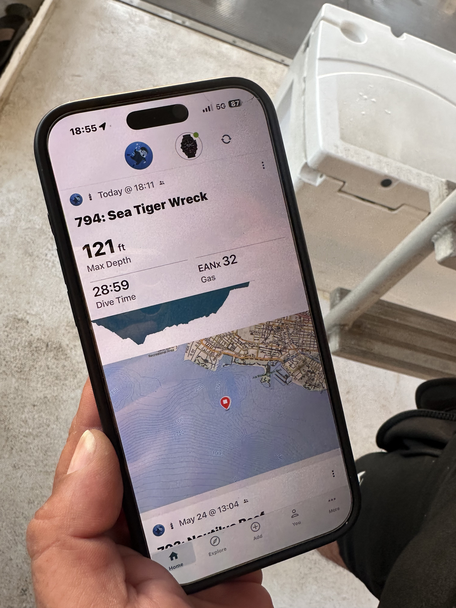
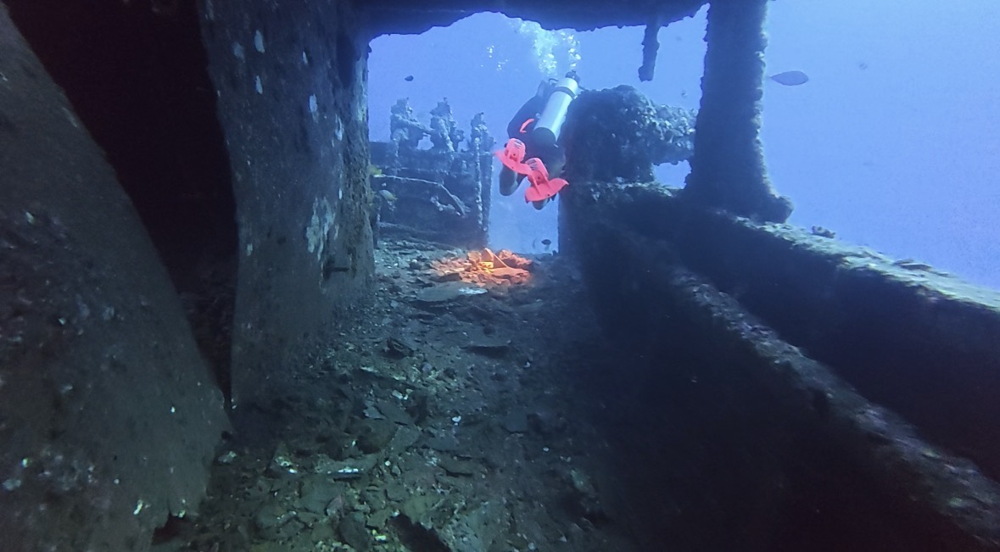
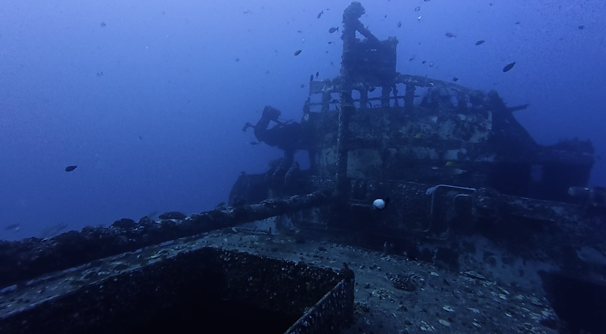
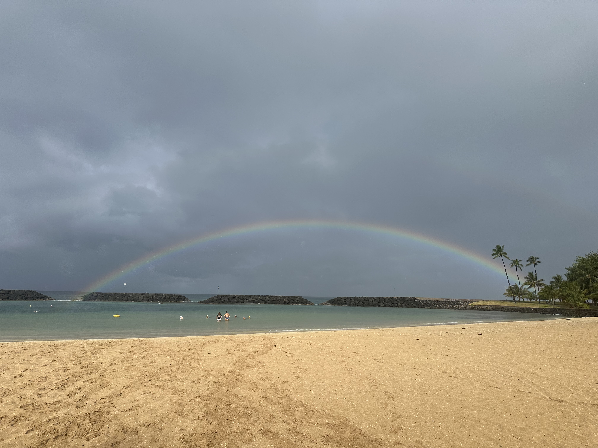
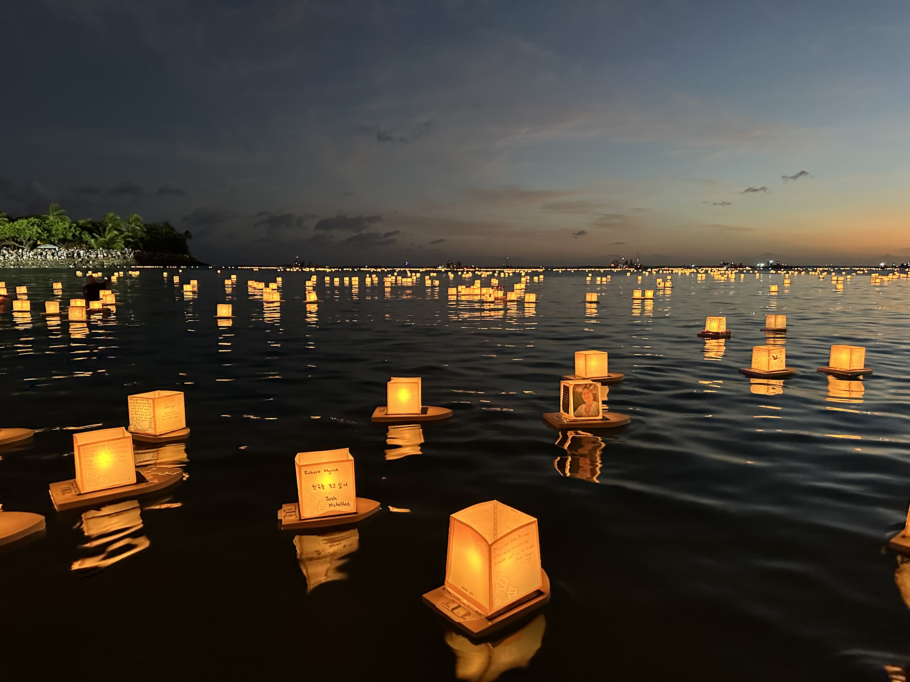

深潜（Deep）和高氧（Nitrox）是我认为休闲潜水员最值得学习的两个专长课程。深潜专长将休闲潜水的最大深度从进阶开放水域（Advanced Open Water）的30米提升到40米，而世界上许多著名的沉船潜点都位于这个深度范围内。而绝大部分有资质的潜店都会要求有深潜证书。对于不少潜店来说，深潜证书也是参加这些潜点的基本要求。与此同时，高氧几乎已经成为大深度休闲潜水的标准配置。因此，完成深潜和高氧专长后，基本就能够解锁世界上绝大多数休闲沉船潜点。
注意力负荷
我的深潜和高氧训练都是在欧胡岛南端的Sea Tiger完成的。Sea Tiger 是夏威夷著名的人工沉船，位于 Waikiki 海滩以南，船底大约在 40 米左右，也是当地经典的深潜训练场地。第一次深潜训练，我们的目标深度是37米。五月底的夏威夷正值浪季，对于已经五个月没有下水的我来说，这本身就是一次不小的挑战。这也是我第一次尝试用下潜绳（reference line）来下潜。当天的能见度并不高。把头埋进水底的一瞬间往下看，只能看到下潜绳通向深不见底的大蓝海，压迫感非常强。与此同时，我还需要处理水流、面镜进水、耳压、还有浮力调节。每一件事情单独拿出来都不算困难，但当它们同时发生时，注意力很快就会被占满。我的身体也诚实地记录了当时的紧张：或许是因为整个下潜过程都绷得太紧，结束潜水回到船上后，我才发现自己一直在流鼻血。
氮醉识别
深潜课程里有一个我很喜欢的设计：在教练的监督下，亲身体验深度对认知能力的影响。在30米以上，随着环境压力增加，部分潜水员可能会出现轻微的氮醉（narcosis）。它通常不是戏剧性的，而是一些很细微的变化：反应慢一点、注意力分散一点、做简单计算需要多花一点时间。教练会安排一些简单的认知任务，例如比较自己和教练电脑表显示的免减压时间，帮助你观察不同深度下自己的反应速度和思考能力。这些任务目的是帮助你建立一种对自己的认识：原来我的身体和大脑，在这个深度会有这样的反应。就我自己的感受而言，在 37 米左右，我能明显感觉到自己的思考速度开始变慢。
像技术潜水员一样思考：保守决策
深潜和高氧课程都在不断培养一种"保守决策"的思维方式。潜水员需要思考的不是如何把限制用满，而是如何主动离限制远一点。这种思维方式和技术潜水很相似：潜水并不是不断挑战自己的极限，而是做好规划，留足余量，在每一个环节都做出稳妥的判断。
- 从"理所当然"到"亲自确认”。高氧课程强调，任何潜水员都应该亲自检查气瓶，而不是依赖别人已经完成的检查。完整的流程包括：分析氧浓度、设置潜水电脑、根据氧浓度计算最大操作深度（Maximum Operating Depth，MOD），最后签字确认。教练反复强调一句话："不要假设（Never assume）。" 即使别人已经分析过，你仍然应该亲自确认。
- 做好预备计划。深潜课程会模拟一些可能出现的情况，例如在安全停留深度更换备用气源，练习如何应对因为突发情况而延长停留时间。教练不断提醒：真正的安全并不是依靠临场反应，而是在下水之前就已经为各种可能性准备好了应对方案。

教练的潜水表记录此次最大深度为121 ft（37m）

Sea Tiger船体

Sea Tiger夹板

白天出门遛弯时拍到的彩虹（Ala Moana Beach Park）

欧胡岛水灯节（Shinnyo Lantern Floating Hawaiʻi）。当地居民和游客会亲手在水灯上写下对逝去亲人的思念。